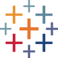
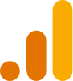
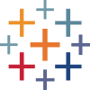
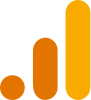

Hi, I am Ana Gentile !
UX/UI designer, solving problems with data analysis and user-centric digital products.
Hi, I am Ana Gentile !
UX/UI designer, solving problems with data analysis and user-centric digital products.
Responsive Website redesign proposed to improve the intuitiveness of research process making the National Archives of Australia’s information easier, and simpler to navigate.
Mobile app designed to improve video streaming experience so that users are satisfied based on a more personalized and tailored recommendation systems.

Responsive redesign of the YMCA's Website aimed at helping and supporting prospective donors to understand the organization's mission through a better navigation experience.

Quantitative Research
Qualitative Research
Affinity Diagrams
User Interviews

Wireframe
Prototype
Usability Testing
Persona Creation

Design System
Style Guide
Info. Architecture
Responsive Design
Web Analytics
Data Visualization
Web Scrapping
Business Metrics
Python
SQL
HTML/CSS
GitHub
 


